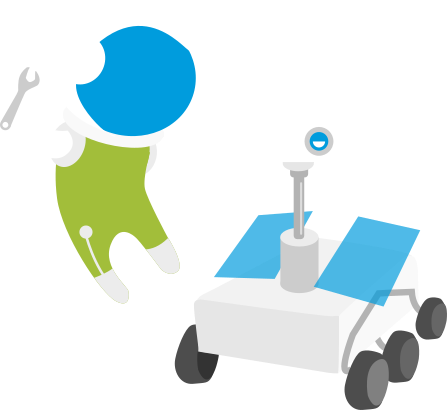

Space Apps Challenge po raz pierwszy w Szczecinie!

NASA Space Apps Challenge to 48-godzinny hackathon (sprint programistyczny),
który polega na rozwiązywaniu wybranego z całej masy nietypowych, kosmicznych problemów - tych na które możemy natrafić zarówno
na Ziemi, przetwarzając dane o obserwacji naszej lub innych planet, jak i na misji kosmicznej w odległej galaktyce!
Z czym mierzyli się uczestnicy w poprzednich latach?
- Zaprojektować sposób wykorzystania danych z projektu NASA Earth do scharakteryzowania rejonów w których można założyć nieformalne osady. Czytaj więcej...
- Napisać aplikację web, która wykorzystując koordynaty dwu- i trójwymiarowe, wizualizuje je na dwuwymiarowej mapie świata. Czytaj więcej...
- Napisać grę, która będzie symulować warunki na innej planecie. Czytaj więcej...
- Stworzyć sensor, lub zestaw sensorów do użycia przez ludzi na Marsie. Czytaj więcej...
- Użyć danych satelitarnych i innych dostępnych zasobów, aby pomóc właścicielom ziemi i rolnikom znaleźć źródła wody. Czytaj więcej...